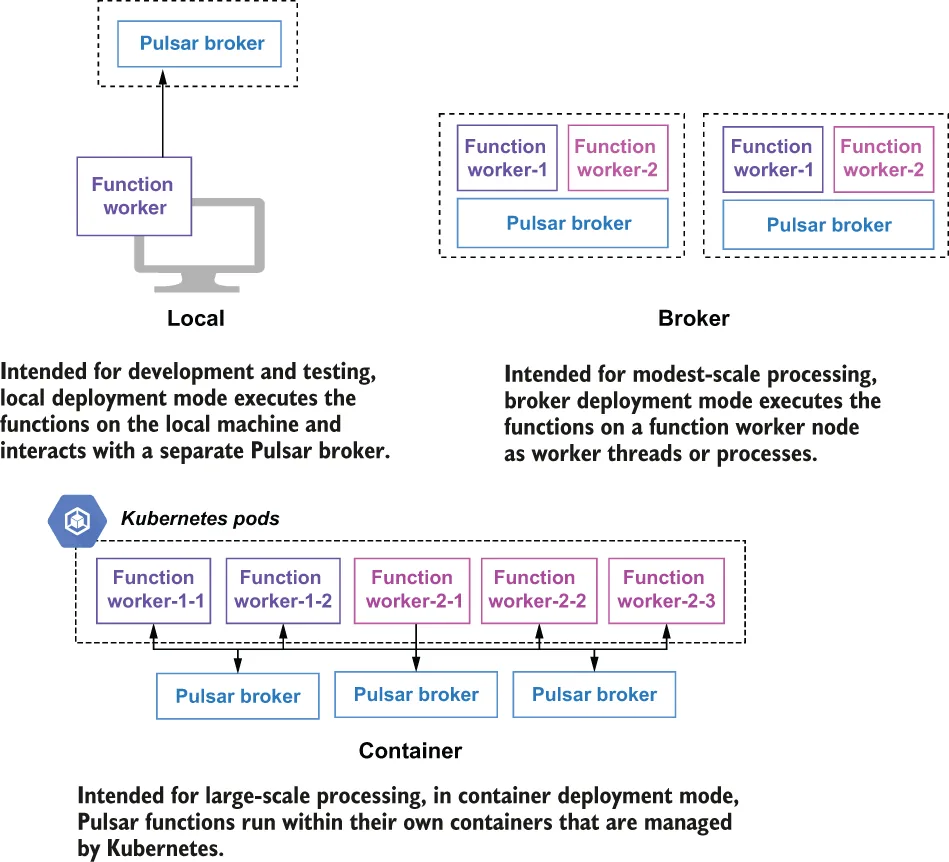

As we have seen, to deploy and manage Pulsar Functions, you need to have a Pulsar cluster running; however, there are a couple of options for where your Pulsar function instances will run. You can have the Pulsar function run on your local development machine (localrun mode) in which case it interacts with the broker over the network. This was what we did with the LocalRunner test case. For production, you will want to deploy your functions in cluster mode.
正如我们已经看到的，要部署和管理 Pulsar Functions，你需要有一个正在运行的 Pulsar 集群；不过，对于你的 Pulsar function 实例将在哪里运行，有几种可选方案。你可以让这个 Pulsar function 运行在你的本地开发机上（localrun 模式），在这种情况下它通过网络与 broker 交互。我们在 LocalRunner 测试用例中所做的正是如此。而在生产环境中，你会希望以集群模式（cluster mode）来部署你的函数。
Cluster mode
集群模式
In this mode, users submit their functions to a running Pulsar cluster, and Pulsar will take care of distributing them across the function workers for execution. The Pulsar Functions framework supports the following runtime options when running in cluster mode: thread, process, and Kubernetes, as shown in figure 4.10, and these refer to how the function code itself is executed inside a function worker, which is the runtime environment used to host Pulsar Functions.
在这种模式下，用户把自己的函数提交给一个正在运行的 Pulsar 集群，而 Pulsar 会负责把它们分发到各个 function worker 上执行。以集群模式运行时，Pulsar Functions 框架支持以下运行时选项：线程、进程和 Kubernetes，如图 4.10 所示；这些指的是函数代码本身在一个 function worker 内部被执行的方式，而 function worker 正是用于承载 Pulsar Functions 的运行时环境。

Figure 4.10 A Pulsar function can run as a thread, process, or Kubernetes StatefulSet inside the Pulsar functions workers.
图 4.10 一个 Pulsar function 可以在 Pulsar functions worker 内部以线程、进程或 Kubernetes StatefulSet 的形式运行。
In Pulsar, there are two options for where the function workers can run. One option is to run inside the Pulsar brokers themselves, which simplifies the deployment. The other option is to start the function worker processes on their own separate nodes to provide better resource isolation between them and your brokers.
在 Pulsar 中，对于这些 function worker 可以运行在哪里，有两种选择。一种选择是运行在 Pulsar broker 自身内部，这会简化部署。另一种选择是在各自独立的节点上启动 function worker 进程，以在它们与你的 broker 之间提供更好的资源隔离。
The benefits of running the function workers on the broker node itself, as either a thread or a separate process, include that it has a smaller hardware footprint, as you won’t need as many nodes in your environment, and a reduction in network latency between the function processes and the broker that is serving the messages. However, running the function workers on separate nodes provides better resource isolation and insulates the pulsar broker process from being inadvertently killed by a function worker crashing and bringing the broker down with it.
把 function worker 运行在 broker 节点自身上（无论是作为线程还是作为一个独立进程）的好处包括：它的硬件占用更小，因为你的环境中不需要那么多节点；并且函数进程与提供消息服务的 broker 之间的网络延迟也会降低。然而，在独立节点上运行 function worker 能提供更好的资源隔离，并使 pulsar broker 进程免受这样的波及——某个 function worker 崩溃时无意中把 broker 进程一起干掉、导致 broker 随之宕机。